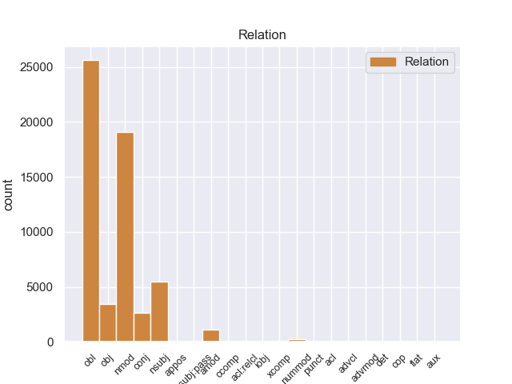
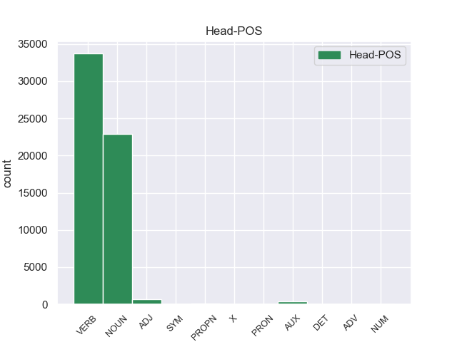
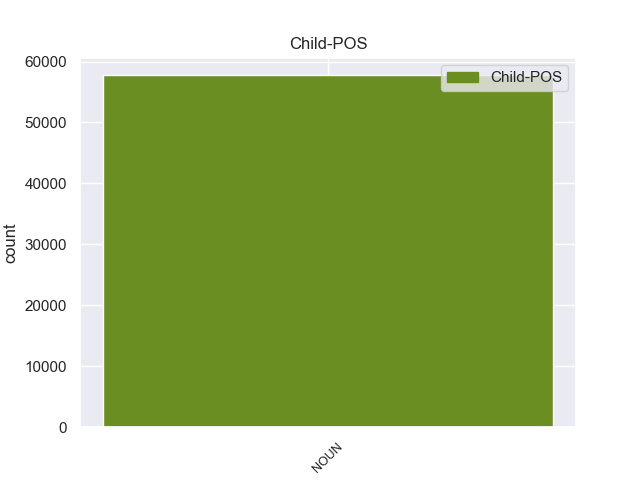

Distribution of features within this leaf



Agreement Rules sorted by frequency.
- When the dependent token is the oblique nominal(obl) of the head token, and the dependent token is NOUN.
1 En _ _ _ _ 0 _ _ _
2 1991 _ _ _ _ 0 _ _ _
3 , _ _ _ _ 0 _ _ _
4 como _ _ _ _ 0 _ _ _
5 ya _ _ _ _ 0 _ _ _
6 está _ _ _ _ 0 _ _ _
7 indicado _ _ _ _ 0 _ _ _
8 en _ _ _ _ 0 _ _ _
9 el _ _ _ _ 0 _ _ _
10 párrafo _ _ _ _ 0 _ _ _
11 anterior _ _ _ _ 0 _ _ _
12 , _ _ _ _ 0 _ _ _
13 se _ _ _ _ 0 _ _ _
14 creó _ _ _ _ 0 _ _ _
15 un _ _ _ _ 0 _ _ _
16 equipo _ _ _ _ 0 _ _ _
17 ad _ _ _ _ 0 _ _ _
18 hoc _ _ _ _ 0 _ _ _
19 para _ _ _ _ 0 _ _ _
20 averiguar _ _ _ _ 0 _ _ _
21 como _ _ _ _ 0 _ _ _
22 se _ _ _ _ 0 _ _ _
23 podía _ _ _ _ 0 _ _ _
24 desarrollar _ _ _ _ 0 _ _ _
25 el _ _ _ _ 0 _ _ _
26 Dialogo _ _ _ _ 0 _ _ _
27 Social _ _ _ _ 0 _ _ _
28 , _ _ _ _ 0 _ _ _
29 este _ _ _ _ 0 _ _ _
30 equipo _ _ _ _ 0 _ _ _
31 estaba _ _ _ _ 0 _ _ _
32 formado formado VERB _ Gender=Masc|Number=Sing|Tense=Past|VerbForm=Part 0 _ _ _
33 por _ _ _ _ 0 _ _ _
34 representantes _ _ _ _ 0 _ _ _
35 de _ _ _ _ 0 _ _ _
36 todas _ _ _ _ 0 _ _ _
37 las _ _ _ _ 0 _ _ _
38 organizaciones organizacione NOUN _ Gender=Fem|Number=Sing 32 obl _ _
39 relacionadas _ _ _ _ 0 _ _ _
40 con _ _ _ _ 0 _ _ _
41 CES _ _ _ _ 0 _ _ _
42 , _ _ _ _ 0 _ _ _
43 UNICE _ _ _ _ 0 _ _ _
44 y _ _ _ _ 0 _ _ _
45 CEEP _ _ _ _ 0 _ _ _
46 ; _ _ _ _ 0 _ _ _
1 Esta _ _ _ _ 0 _ _ _
2 teoría _ _ _ _ 0 _ _ _
3 se _ _ _ _ 0 _ _ _
4 avenía _ _ _ _ 0 _ _ _
5 bien _ _ _ _ 0 _ _ _
6 con _ _ _ _ 0 _ _ _
7 la _ _ _ _ 0 _ _ _
8 creencia _ _ _ _ 0 _ _ _
9 de _ _ _ _ 0 _ _ _
10 el _ _ _ _ 0 _ _ _
11 Romanticismo _ _ _ _ 0 _ _ _
12 en _ _ _ _ 0 _ _ _
13 un _ _ _ _ 0 _ _ _
14 volkgeist _ _ _ _ 0 _ _ _
15 , _ _ _ _ 0 _ _ _
16 " _ _ _ _ 0 _ _ _
17 genio _ _ _ _ 0 _ _ _
18 o _ _ _ _ 0 _ _ _
19 espíritu _ _ _ _ 0 _ _ _
20 de _ _ _ _ 0 _ _ _
21 el _ _ _ _ 0 _ _ _
22 pueblo _ _ _ _ 0 _ _ _
23 " _ _ _ _ 0 _ _ _
24 , _ _ _ _ 0 _ _ _
25 autor _ _ _ _ 0 _ _ _
26 colectivo _ _ _ _ 0 _ _ _
27 y _ _ _ _ 0 _ _ _
28 anónimo anónimo ADJ _ Gender=Masc|Number=Sing 0 _ _ _
29 de _ _ _ _ 0 _ _ _
30 una _ _ _ _ 0 _ _ _
31 poesía poesía NOUN _ Gender=Fem|Number=Sing 28 nmod _ _
32 nacional _ _ _ _ 0 _ _ _
33 . _ _ _ _ 0 _ _ _
1 En _ _ _ _ 0 _ _ _
2 1991 _ _ _ _ 0 _ _ _
3 , _ _ _ _ 0 _ _ _
4 como _ _ _ _ 0 _ _ _
5 ya _ _ _ _ 0 _ _ _
6 está _ _ _ _ 0 _ _ _
7 indicado _ _ _ _ 0 _ _ _
8 en _ _ _ _ 0 _ _ _
9 el _ _ _ _ 0 _ _ _
10 párrafo _ _ _ _ 0 _ _ _
11 anterior _ _ _ _ 0 _ _ _
12 , _ _ _ _ 0 _ _ _
13 se _ _ _ _ 0 _ _ _
14 creó _ _ _ _ 0 _ _ _
15 un _ _ _ _ 0 _ _ _
16 equipo _ _ _ _ 0 _ _ _
17 ad _ _ _ _ 0 _ _ _
18 hoc _ _ _ _ 0 _ _ _
19 para _ _ _ _ 0 _ _ _
20 averiguar _ _ _ _ 0 _ _ _
21 como _ _ _ _ 0 _ _ _
22 se _ _ _ _ 0 _ _ _
23 podía _ _ _ _ 0 _ _ _
24 desarrollar _ _ _ _ 0 _ _ _
25 el _ _ _ _ 0 _ _ _
26 Dialogo _ _ _ _ 0 _ _ _
27 Social _ _ _ _ 0 _ _ _
28 , _ _ _ _ 0 _ _ _
29 este _ _ _ _ 0 _ _ _
30 equipo equipo NOUN _ Gender=Masc|Number=Sing 32 nsubj _ _
31 estaba _ _ _ _ 0 _ _ _
32 formado formado VERB _ Gender=Masc|Number=Sing|Tense=Past|VerbForm=Part 0 _ _ _
33 por _ _ _ _ 0 _ _ _
34 representantes _ _ _ _ 0 _ _ _
35 de _ _ _ _ 0 _ _ _
36 todas _ _ _ _ 0 _ _ _
37 las _ _ _ _ 0 _ _ _
38 organizaciones _ _ _ _ 0 _ _ _
39 relacionadas _ _ _ _ 0 _ _ _
40 con _ _ _ _ 0 _ _ _
41 CES _ _ _ _ 0 _ _ _
42 , _ _ _ _ 0 _ _ _
43 UNICE _ _ _ _ 0 _ _ _
44 y _ _ _ _ 0 _ _ _
45 CEEP _ _ _ _ 0 _ _ _
46 ; _ _ _ _ 0 _ _ _
1 En _ _ _ _ 0 _ _ _
2 1991 _ _ _ _ 0 _ _ _
3 , _ _ _ _ 0 _ _ _
4 como _ _ _ _ 0 _ _ _
5 ya _ _ _ _ 0 _ _ _
6 está _ _ _ _ 0 _ _ _
7 indicado _ _ _ _ 0 _ _ _
8 en _ _ _ _ 0 _ _ _
9 el _ _ _ _ 0 _ _ _
10 párrafo _ _ _ _ 0 _ _ _
11 anterior _ _ _ _ 0 _ _ _
12 , _ _ _ _ 0 _ _ _
13 se _ _ _ _ 0 _ _ _
14 creó crear VERB _ Mood=Ind|Number=Sing|Person=3|Tense=Past|VerbForm=Fin 0 _ _ _
15 un _ _ _ _ 0 _ _ _
16 equipo equipo NOUN _ Gender=Masc|Number=Sing 14 obj _ _
17 ad _ _ _ _ 0 _ _ _
18 hoc _ _ _ _ 0 _ _ _
19 para _ _ _ _ 0 _ _ _
20 averiguar _ _ _ _ 0 _ _ _
21 como _ _ _ _ 0 _ _ _
22 se _ _ _ _ 0 _ _ _
23 podía _ _ _ _ 0 _ _ _
24 desarrollar _ _ _ _ 0 _ _ _
25 el _ _ _ _ 0 _ _ _
26 Dialogo _ _ _ _ 0 _ _ _
27 Social _ _ _ _ 0 _ _ _
28 , _ _ _ _ 0 _ _ _
29 este _ _ _ _ 0 _ _ _
30 equipo _ _ _ _ 0 _ _ _
31 estaba _ _ _ _ 0 _ _ _
32 formado _ _ _ _ 0 _ _ _
33 por _ _ _ _ 0 _ _ _
34 representantes _ _ _ _ 0 _ _ _
35 de _ _ _ _ 0 _ _ _
36 todas _ _ _ _ 0 _ _ _
37 las _ _ _ _ 0 _ _ _
38 organizaciones _ _ _ _ 0 _ _ _
39 relacionadas _ _ _ _ 0 _ _ _
40 con _ _ _ _ 0 _ _ _
41 CES _ _ _ _ 0 _ _ _
42 , _ _ _ _ 0 _ _ _
43 UNICE _ _ _ _ 0 _ _ _
44 y _ _ _ _ 0 _ _ _
45 CEEP _ _ _ _ 0 _ _ _
46 ; _ _ _ _ 0 _ _ _
1 Esta _ _ _ _ 0 _ _ _
2 teoría _ _ _ _ 0 _ _ _
3 se _ _ _ _ 0 _ _ _
4 avenía _ _ _ _ 0 _ _ _
5 bien _ _ _ _ 0 _ _ _
6 con _ _ _ _ 0 _ _ _
7 la _ _ _ _ 0 _ _ _
8 creencia _ _ _ _ 0 _ _ _
9 de _ _ _ _ 0 _ _ _
10 el _ _ _ _ 0 _ _ _
11 Romanticismo _ _ _ _ 0 _ _ _
12 en _ _ _ _ 0 _ _ _
13 un _ _ _ _ 0 _ _ _
14 volkgeist _ _ _ _ 0 _ _ _
15 , _ _ _ _ 0 _ _ _
16 " _ _ _ _ 0 _ _ _
17 genio genio NOUN _ Gender=Masc|Number=Sing 0 _ _ _
18 o _ _ _ _ 0 _ _ _
19 espíritu espíritu NOUN _ Gender=Masc|Number=Sing 17 conj _ _
20 de _ _ _ _ 0 _ _ _
21 el _ _ _ _ 0 _ _ _
22 pueblo _ _ _ _ 0 _ _ _
23 " _ _ _ _ 0 _ _ _
24 , _ _ _ _ 0 _ _ _
25 autor _ _ _ _ 0 _ _ _
26 colectivo _ _ _ _ 0 _ _ _
27 y _ _ _ _ 0 _ _ _
28 anónimo _ _ _ _ 0 _ _ _
29 de _ _ _ _ 0 _ _ _
30 una _ _ _ _ 0 _ _ _
31 poesía _ _ _ _ 0 _ _ _
32 nacional _ _ _ _ 0 _ _ _
33 . _ _ _ _ 0 _ _ _
1 De _ _ _ _ 0 _ _ _
2 la _ _ _ _ 0 _ _ _
3 Vega _ _ _ _ 0 _ _ _
4 ha _ _ _ _ 0 _ _ _
5 pedido _ _ _ _ 0 _ _ _
6 respetar _ _ _ _ 0 _ _ _
7 los _ _ _ _ 0 _ _ _
8 tiempos _ _ _ _ 0 _ _ _
9 de _ _ _ _ 0 _ _ _
10 los _ _ _ _ 0 _ _ _
11 procesos _ _ _ _ 0 _ _ _
12 y _ _ _ _ 0 _ _ _
13 de _ _ _ _ 0 _ _ _
14 la _ _ _ _ 0 _ _ _
15 misma _ _ _ _ 0 _ _ _
16 manera _ _ _ _ 0 _ _ _
17 que _ _ _ _ 0 _ _ _
18 no _ _ _ _ 0 _ _ _
19 ha _ _ _ _ 0 _ _ _
20 querido _ _ _ _ 0 _ _ _
21 entrar _ _ _ _ 0 _ _ _
22 en _ _ _ _ 0 _ _ _
23 la _ _ _ _ 0 _ _ _
24 salida _ _ _ _ 0 _ _ _
25 de _ _ _ _ 0 _ _ _
26 Corbacho _ _ _ _ 0 _ _ _
27 , _ _ _ _ 0 _ _ _
28 tampoco _ _ _ _ 0 _ _ _
29 lo _ _ _ _ 0 _ _ _
30 ha _ _ _ _ 0 _ _ _
31 hecho _ _ _ _ 0 _ _ _
32 la _ _ _ _ 0 _ _ _
33 posible posible NOUN _ Gender=Fem|Number=Sing 34 amod _ _
34 salida salida NOUN _ Gender=Fem|Number=Sing 0 _ _ _
35 de _ _ _ _ 0 _ _ _
36 Trinidad _ _ _ _ 0 _ _ _
37 Jiménez _ _ _ _ 0 _ _ _
38 , _ _ _ _ 0 _ _ _
39 que _ _ _ _ 0 _ _ _
40 le _ _ _ _ 0 _ _ _
41 acompañaba _ _ _ _ 0 _ _ _
42 en _ _ _ _ 0 _ _ _
43 la _ _ _ _ 0 _ _ _
44 sala _ _ _ _ 0 _ _ _
45 de _ _ _ _ 0 _ _ _
46 prensa _ _ _ _ 0 _ _ _
47 . _ _ _ _ 0 _ _ _
1 Igualmente _ _ _ _ 0 _ _ _
2 , _ _ _ _ 0 _ _ _
3 la _ _ _ _ 0 _ _ _
4 presencia _ _ _ _ 0 _ _ _
5 de _ _ _ _ 0 _ _ _
6 Ledesma _ _ _ _ 0 _ _ _
7 está _ _ _ _ 0 _ _ _
8 supeditada _ _ _ _ 0 _ _ _
9 a _ _ _ _ 0 _ _ _
10 la _ _ _ _ 0 _ _ _
11 actuación _ _ _ _ 0 _ _ _
12 de _ _ _ _ 0 _ _ _
13 el _ _ _ _ 0 _ _ _
14 seleccionado _ _ _ _ 0 _ _ _
15 argentino _ _ _ _ 0 _ _ _
16 sub _ _ _ _ 0 _ _ _
17 20 _ _ _ _ 0 _ _ _
18 en _ _ _ _ 0 _ _ _
19 los _ _ _ _ 0 _ _ _
20 Panamericanos _ _ _ _ 0 _ _ _
21 , _ _ _ _ 0 _ _ _
22 ya _ _ _ _ 0 _ _ _
23 que _ _ _ _ 0 _ _ _
24 Cirigliano _ _ _ _ 0 _ _ _
25 sólo _ _ _ _ 0 _ _ _
26 estaría _ _ _ _ 0 _ _ _
27 en _ _ _ _ 0 _ _ _
28 condiciones _ _ _ _ 0 _ _ _
29 de _ _ _ _ 0 _ _ _
30 jugar _ _ _ _ 0 _ _ _
31 ante _ _ _ _ 0 _ _ _
32 Aldosivi _ _ _ _ 0 _ _ _
33 en _ _ _ _ 0 _ _ _
34 caso _ _ _ _ 0 _ _ _
35 de _ _ _ _ 0 _ _ _
36 que _ _ _ _ 0 _ _ _
37 el _ _ _ _ 0 _ _ _
38 elenco _ _ _ _ 0 _ _ _
39 " _ _ _ _ 0 _ _ _
40 albiceleste _ _ _ _ 0 _ _ _
41 " _ _ _ _ 0 _ _ _
42 no _ _ _ _ 0 _ _ _
43 supere _ _ _ _ 0 _ _ _
44 la _ _ _ _ 0 _ _ _
45 primera primera NOUN _ Gender=Fem|Number=Sing 46 nummod _ _
46 ronda ronda NOUN _ Gender=Fem|Number=Sing 0 _ _ _
47 , _ _ _ _ 0 _ _ _
48 algo _ _ _ _ 0 _ _ _
49 poco _ _ _ _ 0 _ _ _
50 probable _ _ _ _ 0 _ _ _
51 . _ _ _ _ 0 _ _ _
1 Se _ _ _ _ 0 _ _ _
2 llena _ _ _ _ 0 _ _ _
3 demasiado _ _ _ _ 0 _ _ _
4 y _ _ _ _ 0 _ _ _
5 no _ _ _ _ 0 _ _ _
6 controlan _ _ _ _ 0 _ _ _
7 la _ _ _ _ 0 _ _ _
8 cantidad _ _ _ _ 0 _ _ _
9 de _ _ _ _ 0 _ _ _
10 gente _ _ _ _ 0 _ _ _
11 que _ _ _ _ 0 _ _ _
12 entra _ _ _ _ 0 _ _ _
13 , _ _ _ _ 0 _ _ _
14 parecen parecen VERB _ Mood=Ind|Number=Plur|Person=3|Tense=Pres|VerbForm=Fin 0 _ _ _
15 muy _ _ _ _ 0 _ _ _
16 avariciosos avariciosos NOUN _ Number=Plur 14 advcl _ _
17 y _ _ _ _ 0 _ _ _
18 no _ _ _ _ 0 _ _ _
19 se _ _ _ _ 0 _ _ _
20 puede _ _ _ _ 0 _ _ _
21 ni _ _ _ _ 0 _ _ _
22 estar _ _ _ _ 0 _ _ _
23 . _ _ _ _ 0 _ _ _
1 Goatse.cx _ _ _ _ 0 _ _ _
2 o _ _ _ _ 0 _ _ _
3 Goatse.da.ru _ _ _ _ 0 _ _ _
4 ( _ _ _ _ 0 _ _ _
5 pronunciado _ _ _ _ 0 _ _ _
6 de _ _ _ _ 0 _ _ _
7 varias _ _ _ _ 0 _ _ _
8 maneras _ _ _ _ 0 _ _ _
9 en _ _ _ _ 0 _ _ _
10 inglés _ _ _ _ 0 _ _ _
11 : _ _ _ _ 0 _ _ _
12 " _ _ _ _ 0 _ _ _
13 goat _ _ _ _ 0 _ _ _
14 see _ _ _ _ 0 _ _ _
15 , _ _ _ _ 0 _ _ _
16 " _ _ _ _ 0 _ _ _
17 " _ _ _ _ 0 _ _ _
18 goat _ _ _ _ 0 _ _ _
19 seh _ _ _ _ 0 _ _ _
20 , _ _ _ _ 0 _ _ _
21 " _ _ _ _ 0 _ _ _
22 " _ _ _ _ 0 _ _ _
23 goats _ _ _ _ 0 _ _ _
24 , _ _ _ _ 0 _ _ _
25 " _ _ _ _ 0 _ _ _
26 " _ _ _ _ 0 _ _ _
27 goatsex _ _ _ _ 0 _ _ _
28 , _ _ _ _ 0 _ _ _
29 " _ _ _ _ 0 _ _ _
30 " _ _ _ _ 0 _ _ _
31 goat _ _ _ _ 0 _ _ _
32 say _ _ _ _ 0 _ _ _
33 " _ _ _ _ 0 _ _ _
34 , _ _ _ _ 0 _ _ _
35 o _ _ _ _ 0 _ _ _
36 " _ _ _ _ 0 _ _ _
37 goat goat NOUN _ Gender=Masc|Number=Sing 45 appos _ _
38 see _ _ _ _ 0 _ _ _
39 dot _ _ _ _ 0 _ _ _
40 cx _ _ _ _ 0 _ _ _
41 " _ _ _ _ 0 _ _ _
42 ) _ _ _ _ 0 _ _ _
43 fue _ _ _ _ 0 _ _ _
44 un _ _ _ _ 0 _ _ _
45 sitio sitio NOUN _ Gender=Masc|Number=Sing 0 _ _ _
46 de _ _ _ _ 0 _ _ _
47 Internet _ _ _ _ 0 _ _ _
48 de _ _ _ _ 0 _ _ _
49 el _ _ _ _ 0 _ _ _
50 tipo _ _ _ _ 0 _ _ _
51 " _ _ _ _ 0 _ _ _
52 Internet _ _ _ _ 0 _ _ _
53 shock _ _ _ _ 0 _ _ _
54 sites _ _ _ _ 0 _ _ _
55 " _ _ _ _ 0 _ _ _
56 que _ _ _ _ 0 _ _ _
57 durante _ _ _ _ 0 _ _ _
58 varios _ _ _ _ 0 _ _ _
59 años _ _ _ _ 0 _ _ _
60 , _ _ _ _ 0 _ _ _
61 desde _ _ _ _ 0 _ _ _
62 1999 _ _ _ _ 0 _ _ _
63 , _ _ _ _ 0 _ _ _
64 conmocionaron _ _ _ _ 0 _ _ _
65 a _ _ _ _ 0 _ _ _
66 la _ _ _ _ 0 _ _ _
67 comunidad _ _ _ _ 0 _ _ _
68 internauta _ _ _ _ 0 _ _ _
69 , _ _ _ _ 0 _ _ _
70 recibiendo _ _ _ _ 0 _ _ _
71 más _ _ _ _ 0 _ _ _
72 visitas _ _ _ _ 0 _ _ _
73 durante _ _ _ _ 0 _ _ _
74 el _ _ _ _ 0 _ _ _
75 año _ _ _ _ 0 _ _ _
76 2004 _ _ _ _ 0 _ _ _
77 . _ _ _ _ 0 _ _ _
1 Carece _ _ _ _ 0 _ _ _
2 de _ _ _ _ 0 _ _ _
3 una _ _ _ _ 0 _ _ _
4 forma _ _ _ _ 0 _ _ _
5 infinitiva _ _ _ _ 0 _ _ _
6 distinta _ _ _ _ 0 _ _ _
7 de _ _ _ _ 0 _ _ _
8 las _ _ _ _ 0 _ _ _
9 otras _ _ _ _ 0 _ _ _
10 ( _ _ _ _ 0 _ _ _
11 el _ _ _ _ 0 _ _ _
12 infinitivo _ _ _ _ 0 _ _ _
13 debe _ _ _ _ 0 _ _ _
14 ser _ _ _ _ 0 _ _ _
15 construido _ _ _ _ 0 _ _ _
16 desde _ _ _ _ 0 _ _ _
17 la _ _ _ _ 0 _ _ _
18 raíz _ _ _ _ 0 _ _ _
19 verbal _ _ _ _ 0 _ _ _
20 para _ _ _ _ 0 _ _ _
21 ser _ _ _ _ 0 _ _ _
22 usado usado VERB _ Gender=Masc|Number=Sing 0 _ _ _
23 en _ _ _ _ 0 _ _ _
24 las _ _ _ _ 0 _ _ _
25 frases _ _ _ _ 0 _ _ _
26 y _ _ _ _ 0 _ _ _
27 puede _ _ _ _ 0 _ _ _
28 tener _ _ _ _ 0 _ _ _
29 una _ _ _ _ 0 _ _ _
30 forma _ _ _ _ 0 _ _ _
31 aspirada _ _ _ _ 0 _ _ _
32 y _ _ _ _ 0 _ _ _
33 una _ _ _ _ 0 _ _ _
34 no no NOUN _ Gender=Fem|Number=Sing 22 advmod _ _
35 aspirada _ _ _ _ 0 _ _ _
36 ) _ _ _ _ 0 _ _ _
37 . _ _ _ _ 0 _ _ _
1 Sirva _ _ _ _ 0 _ _ _
2 la _ _ _ _ 0 _ _ _
3 presente _ _ _ _ 0 _ _ _
4 para _ _ _ _ 0 _ _ _
5 saludar _ _ _ _ 0 _ _ _
6 le _ _ _ _ 0 _ _ _
7 de _ _ _ _ 0 _ _ _
8 parte _ _ _ _ 0 _ _ _
9 de _ _ _ _ 0 _ _ _
10 el _ _ _ _ 0 _ _ _
11 Alcalde _ _ _ _ 0 _ _ _
12 de _ _ _ _ 0 _ _ _
13 el _ _ _ _ 0 _ _ _
14 Municipio _ _ _ _ 0 _ _ _
15 Heres _ _ _ _ 0 _ _ _
16 y _ _ _ _ 0 _ _ _
17 su _ _ _ _ 0 _ _ _
18 Equipo _ _ _ _ 0 _ _ _
19 de _ _ _ _ 0 _ _ _
20 Turismo _ _ _ _ 0 _ _ _
21 e _ _ _ _ 0 _ _ _
22 informar _ _ _ _ 0 _ _ _
23 le _ _ _ _ 0 _ _ _
24 que _ _ _ _ 0 _ _ _
25 el _ _ _ _ 0 _ _ _
26 20 _ _ _ _ 0 _ _ _
27 de _ _ _ _ 0 _ _ _
28 mayo _ _ _ _ 0 _ _ _
29 de _ _ _ _ 0 _ _ _
30 el _ _ _ _ 0 _ _ _
31 año _ _ _ _ 0 _ _ _
32 en _ _ _ _ 0 _ _ _
33 curso _ _ _ _ 0 _ _ _
34 , _ _ _ _ 0 _ _ _
35 en _ _ _ _ 0 _ _ _
36 el _ _ _ _ 0 _ _ _
37 marco _ _ _ _ 0 _ _ _
38 de _ _ _ _ 0 _ _ _
39 la _ _ _ _ 0 _ _ _
40 celebración _ _ _ _ 0 _ _ _
41 de _ _ _ _ 0 _ _ _
42 los _ _ _ _ 0 _ _ _
43 246 _ _ _ _ 0 _ _ _
44 aniversarios _ _ _ _ 0 _ _ _
45 de _ _ _ _ 0 _ _ _
46 Ciudad _ _ _ _ 0 _ _ _
47 Bolívar _ _ _ _ 0 _ _ _
48 , _ _ _ _ 0 _ _ _
49 la _ _ _ _ 0 _ _ _
50 Alcaldía _ _ _ _ 0 _ _ _
51 de _ _ _ _ 0 _ _ _
52 el _ _ _ _ 0 _ _ _
53 Municipio _ _ _ _ 0 _ _ _
54 Heres _ _ _ _ 0 _ _ _
55 , _ _ _ _ 0 _ _ _
56 a _ _ _ _ 0 _ _ _
57 través _ _ _ _ 0 _ _ _
58 de _ _ _ _ 0 _ _ _
59 su _ _ _ _ 0 _ _ _
60 Dirección _ _ _ _ 0 _ _ _
61 de _ _ _ _ 0 _ _ _
62 Turismo _ _ _ _ 0 _ _ _
63 ha _ _ _ _ 0 _ _ _
64 programado _ _ _ _ 0 _ _ _
65 las _ _ _ _ 0 _ _ _
66 1ras _ _ _ _ 0 _ _ _
67 jornadas _ _ _ _ 0 _ _ _
68 sobre _ _ _ _ 0 _ _ _
69 perspectivas _ _ _ _ 0 _ _ _
70 de _ _ _ _ 0 _ _ _
71 desarrollo _ _ _ _ 0 _ _ _
72 para _ _ _ _ 0 _ _ _
73 el _ _ _ _ 0 _ _ _
74 turístico _ _ _ _ 0 _ _ _
75 sustentable _ _ _ _ 0 _ _ _
76 en _ _ _ _ 0 _ _ _
77 el _ _ _ _ 0 _ _ _
78 Municipio _ _ _ _ 0 _ _ _
79 Heres _ _ _ _ 0 _ _ _
80 , _ _ _ _ 0 _ _ _
81 que _ _ _ _ 0 _ _ _
82 contará _ _ _ _ 0 _ _ _
83 con _ _ _ _ 0 _ _ _
84 la _ _ _ _ 0 _ _ _
85 participación _ _ _ _ 0 _ _ _
86 de _ _ _ _ 0 _ _ _
87 representantes _ _ _ _ 0 _ _ _
88 de _ _ _ _ 0 _ _ _
89 los _ _ _ _ 0 _ _ _
90 poderes _ _ _ _ 0 _ _ _
91 públicos _ _ _ _ 0 _ _ _
92 locales _ _ _ _ 0 _ _ _
93 , _ _ _ _ 0 _ _ _
94 regionales _ _ _ _ 0 _ _ _
95 y _ _ _ _ 0 _ _ _
96 nacionales _ _ _ _ 0 _ _ _
97 , _ _ _ _ 0 _ _ _
98 así _ _ _ _ 0 _ _ _
99 como _ _ _ _ 0 _ _ _
100 destacados _ _ _ _ 0 _ _ _
101 profesionales _ _ _ _ 0 _ _ _
102 , _ _ _ _ 0 _ _ _
103 académicos _ _ _ _ 0 _ _ _
104 , _ _ _ _ 0 _ _ _
105 coordinadores _ _ _ _ 0 _ _ _
106 de _ _ _ _ 0 _ _ _
107 turismos _ _ _ _ 0 _ _ _
108 de _ _ _ _ 0 _ _ _
109 las _ _ _ _ 0 _ _ _
110 diferentes diferente NOUN _ Gender=Masc|Number=Plur 125 det _ _
111 universidades _ _ _ _ 0 _ _ _
112 que _ _ _ _ 0 _ _ _
113 ofrecen _ _ _ _ 0 _ _ _
114 la _ _ _ _ 0 _ _ _
115 carrera _ _ _ _ 0 _ _ _
116 de _ _ _ _ 0 _ _ _
117 Turismo _ _ _ _ 0 _ _ _
118 en _ _ _ _ 0 _ _ _
119 la _ _ _ _ 0 _ _ _
120 región _ _ _ _ 0 _ _ _
121 , _ _ _ _ 0 _ _ _
122 estudiantes _ _ _ _ 0 _ _ _
123 universitarios _ _ _ _ 0 _ _ _
124 , _ _ _ _ 0 _ _ _
125 empresarios empresario NOUN _ Gender=Masc|Number=Plur 0 _ _ _
126 turísticos _ _ _ _ 0 _ _ _
127 y _ _ _ _ 0 _ _ _
128 promotores _ _ _ _ 0 _ _ _
129 turísticos _ _ _ _ 0 _ _ _
130 de _ _ _ _ 0 _ _ _
131 el _ _ _ _ 0 _ _ _
132 Estado _ _ _ _ 0 _ _ _
133 Bolívar _ _ _ _ 0 _ _ _
134 . _ _ _ _ 0 _ _ _
1 Con _ _ _ _ 0 _ _ _
2 miras _ _ _ _ 0 _ _ _
3 a _ _ _ _ 0 _ _ _
4 minimizar _ _ _ _ 0 _ _ _
5 cualquier _ _ _ _ 0 _ _ _
6 confusión _ _ _ _ 0 _ _ _
7 con _ _ _ _ 0 _ _ _
8 una _ _ _ _ 0 _ _ _
9 religión _ _ _ _ 0 _ _ _
10 , _ _ _ _ 0 _ _ _
11 el _ _ _ _ 0 _ _ _
12 uso uso NOUN _ Gender=Masc|Number=Sing 28 nsubj:pass _ _
13 de _ _ _ _ 0 _ _ _
14 la _ _ _ _ 0 _ _ _
15 palabra _ _ _ _ 0 _ _ _
16 " _ _ _ _ 0 _ _ _
17 templo _ _ _ _ 0 _ _ _
18 " _ _ _ _ 0 _ _ _
19 para _ _ _ _ 0 _ _ _
20 describir _ _ _ _ 0 _ _ _
21 los _ _ _ _ 0 _ _ _
22 inmuebles _ _ _ _ 0 _ _ _
23 de _ _ _ _ 0 _ _ _
24 los _ _ _ _ 0 _ _ _
25 Shriners _ _ _ _ 0 _ _ _
26 ha _ _ _ _ 0 _ _ _
27 sido _ _ _ _ 0 _ _ _
28 reemplazado reemplazado VERB _ Gender=Masc|Number=Sing|Tense=Past|VerbForm=Part 0 _ _ _
29 por _ _ _ _ 0 _ _ _
30 la _ _ _ _ 0 _ _ _
31 frase _ _ _ _ 0 _ _ _
32 " _ _ _ _ 0 _ _ _
33 Centro _ _ _ _ 0 _ _ _
34 Shriner _ _ _ _ 0 _ _ _
35 " _ _ _ _ 0 _ _ _
36 , _ _ _ _ 0 _ _ _
37 aunque _ _ _ _ 0 _ _ _
38 en _ _ _ _ 0 _ _ _
39 capítulos _ _ _ _ 0 _ _ _
40 individuales _ _ _ _ 0 _ _ _
41 siguen _ _ _ _ 0 _ _ _
42 siendo _ _ _ _ 0 _ _ _
43 nombrados _ _ _ _ 0 _ _ _
44 como _ _ _ _ 0 _ _ _
45 " _ _ _ _ 0 _ _ _
46 templos _ _ _ _ 0 _ _ _
47 " _ _ _ _ 0 _ _ _
48 . _ _ _ _ 0 _ _ _
1 Cuando _ _ _ _ 0 _ _ _
2 tras _ _ _ _ 0 _ _ _
3 su _ _ _ _ 0 _ _ _
4 muerte _ _ _ _ 0 _ _ _
5 , _ _ _ _ 0 _ _ _
6 los _ _ _ _ 0 _ _ _
7 estados _ _ _ _ 0 _ _ _
8 de _ _ _ _ 0 _ _ _
9 California _ _ _ _ 0 _ _ _
10 y _ _ _ _ 0 _ _ _
11 Texas _ _ _ _ 0 _ _ _
12 trataron _ _ _ _ 0 _ _ _
13 de _ _ _ _ 0 _ _ _
14 cobrar _ _ _ _ 0 _ _ _
15 los _ _ _ _ 0 _ _ _
16 impuestos _ _ _ _ 0 _ _ _
17 relativos _ _ _ _ 0 _ _ _
18 a _ _ _ _ 0 _ _ _
19 su _ _ _ _ 0 _ _ _
20 herencia _ _ _ _ 0 _ _ _
21 , _ _ _ _ 0 _ _ _
22 no _ _ _ _ 0 _ _ _
23 pudieron _ _ _ _ 0 _ _ _
24 probar probar VERB _ Gender=Masc|Number=Sing|Tense=Past|VerbForm=Part 0 _ _ _
25 que _ _ _ _ 0 _ _ _
26 hubiera _ _ _ _ 0 _ _ _
27 sido _ _ _ _ 0 _ _ _
28 residente residente NOUN _ Gender=Masc|Number=Sing 24 ccomp _ _
29 legal _ _ _ _ 0 _ _ _
30 en _ _ _ _ 0 _ _ _
31 ninguno _ _ _ _ 0 _ _ _
32 de _ _ _ _ 0 _ _ _
33 los _ _ _ _ 0 _ _ _
34 dos _ _ _ _ 0 _ _ _
35 territorios _ _ _ _ 0 _ _ _
36 . _ _ _ _ 0 _ _ _
1 Con _ _ _ _ 0 _ _ _
2 la _ _ _ _ 0 _ _ _
3 ayuda _ _ _ _ 0 _ _ _
4 de _ _ _ _ 0 _ _ _
5 sus _ _ _ _ 0 _ _ _
6 amigos _ _ _ _ 0 _ _ _
7 Lamb _ _ _ _ 0 _ _ _
8 logró _ _ _ _ 0 _ _ _
9 evitar _ _ _ _ 0 _ _ _
10 que _ _ _ _ 0 _ _ _
11 su _ _ _ _ 0 _ _ _
12 hermana _ _ _ _ 0 _ _ _
13 fuese _ _ _ _ 0 _ _ _
14 encarcelada _ _ _ _ 0 _ _ _
15 de _ _ _ _ 0 _ _ _
16 por _ _ _ _ 0 _ _ _
17 vida _ _ _ _ 0 _ _ _
18 , _ _ _ _ 0 _ _ _
19 con _ _ _ _ 0 _ _ _
20 la _ _ _ _ 0 _ _ _
21 condición condición NOUN _ Gender=Fem|Number=Sing 0 _ _ _
22 de _ _ _ _ 0 _ _ _
23 que _ _ _ _ 0 _ _ _
24 sería _ _ _ _ 0 _ _ _
25 responsable responsable NOUN _ Gender=Masc|Number=Sing 21 acl:relcl _ _
26 de _ _ _ _ 0 _ _ _
27 ella _ _ _ _ 0 _ _ _
28 . _ _ _ _ 0 _ _ _
1 El _ _ _ _ 0 _ _ _
2 objetivo _ _ _ _ 0 _ _ _
3 de _ _ _ _ 0 _ _ _
4 el _ _ _ _ 0 _ _ _
5 IDSDR _ _ _ _ 0 _ _ _
6 es _ _ _ _ 0 _ _ _
7 agrupar _ _ _ _ 0 _ _ _
8 a _ _ _ _ 0 _ _ _
9 los _ _ _ _ 0 _ _ _
10 máximos _ _ _ _ 0 _ _ _
11 representantes _ _ _ _ 0 _ _ _
12 de _ _ _ _ 0 _ _ _
13 el _ _ _ _ 0 _ _ _
14 diseño _ _ _ _ 0 _ _ _
15 arquitectónico _ _ _ _ 0 _ _ _
16 y _ _ _ _ 0 _ _ _
17 de _ _ _ _ 0 _ _ _
18 interiores _ _ _ _ 0 _ _ _
19 , _ _ _ _ 0 _ _ _
20 tanto _ _ _ _ 0 _ _ _
21 de _ _ _ _ 0 _ _ _
22 el _ _ _ _ 0 _ _ _
23 mercado _ _ _ _ 0 _ _ _
24 nacional _ _ _ _ 0 _ _ _
25 como _ _ _ _ 0 _ _ _
26 extranjero _ _ _ _ 0 _ _ _
27 , _ _ _ _ 0 _ _ _
28 dentro _ _ _ _ 0 _ _ _
29 de _ _ _ _ 0 _ _ _
30 un _ _ _ _ 0 _ _ _
31 concepto _ _ _ _ 0 _ _ _
32 totalmente _ _ _ _ 0 _ _ _
33 innovador _ _ _ _ 0 _ _ _
34 , _ _ _ _ 0 _ _ _
35 con _ _ _ _ 0 _ _ _
36 la _ _ _ _ 0 _ _ _
37 finalidad _ _ _ _ 0 _ _ _
38 de _ _ _ _ 0 _ _ _
39 mantener _ _ _ _ 0 _ _ _
40 a _ _ _ _ 0 _ _ _
41 la _ _ _ _ 0 _ _ _
42 vanguardia _ _ _ _ 0 _ _ _
43 a _ _ _ _ 0 _ _ _
44 los _ _ _ _ 0 _ _ _
45 profesionales _ _ _ _ 0 _ _ _
46 , _ _ _ _ 0 _ _ _
47 estudiantes _ _ _ _ 0 _ _ _
48 de _ _ _ _ 0 _ _ _
49 la _ _ _ _ 0 _ _ _
50 industria _ _ _ _ 0 _ _ _
51 y _ _ _ _ 0 _ _ _
52 público _ _ _ _ 0 _ _ _
53 en _ _ _ _ 0 _ _ _
54 general _ _ _ _ 0 _ _ _
55 , _ _ _ _ 0 _ _ _
56 que _ _ _ _ 0 _ _ _
57 podrán _ _ _ _ 0 _ _ _
58 admirar _ _ _ _ 0 _ _ _
59 y _ _ _ _ 0 _ _ _
60 sentir _ _ _ _ 0 _ _ _
61 los _ _ _ _ 0 _ _ _
62 mas _ _ _ _ 0 _ _ _
63 hermosos _ _ _ _ 0 _ _ _
64 y _ _ _ _ 0 _ _ _
65 espectaculares _ _ _ _ 0 _ _ _
66 ambientes ambiente NOUN _ Gender=Masc|Number=Plur 0 _ _ _
67 y _ _ _ _ 0 _ _ _
68 escenarios _ _ _ _ 0 _ _ _
69 , _ _ _ _ 0 _ _ _
70 creados creado NOUN _ Gender=Masc|Number=Plur 66 acl _ _
71 y _ _ _ _ 0 _ _ _
72 diseñados _ _ _ _ 0 _ _ _
73 especialmente _ _ _ _ 0 _ _ _
74 para _ _ _ _ 0 _ _ _
75 este _ _ _ _ 0 _ _ _
76 show _ _ _ _ 0 _ _ _
77 , _ _ _ _ 0 _ _ _
78 así _ _ _ _ 0 _ _ _
79 como _ _ _ _ 0 _ _ _
80 presenciar _ _ _ _ 0 _ _ _
81 las _ _ _ _ 0 _ _ _
82 excelentes _ _ _ _ 0 _ _ _
83 charlas _ _ _ _ 0 _ _ _
84 a _ _ _ _ 0 _ _ _
85 cargo _ _ _ _ 0 _ _ _
86 de _ _ _ _ 0 _ _ _
87 famosas _ _ _ _ 0 _ _ _
88 personalidades _ _ _ _ 0 _ _ _
89 tanto _ _ _ _ 0 _ _ _
90 nacionales _ _ _ _ 0 _ _ _
91 como _ _ _ _ 0 _ _ _
92 internacionales _ _ _ _ 0 _ _ _
93 . _ _ _ _ 0 _ _ _
1 También _ _ _ _ 0 _ _ _
2 los _ _ _ _ 0 _ _ _
3 llamados llamado NOUN _ Number=Plur 4 cop _ _
4 baldíos baldío NOUN _ Gender=Masc|Number=Plur 0 _ _ _
5 y _ _ _ _ 0 _ _ _
6 tierras _ _ _ _ 0 _ _ _
7 comunales _ _ _ _ 0 _ _ _
8 de _ _ _ _ 0 _ _ _
9 los _ _ _ _ 0 _ _ _
10 municipios _ _ _ _ 0 _ _ _
11 . _ _ _ _ 0 _ _ _
1 Se _ _ _ _ 0 _ _ _
2 reincorporó _ _ _ _ 0 _ _ _
3 el _ _ _ _ 0 _ _ _
4 14 _ _ _ _ 0 _ _ _
5 de _ _ _ _ 0 _ _ _
6 septiembre _ _ _ _ 0 _ _ _
7 de _ _ _ _ 0 _ _ _
8 1839 _ _ _ _ 0 _ _ _
9 y _ _ _ _ 0 _ _ _
10 se _ _ _ _ 0 _ _ _
11 le _ _ _ _ 0 _ _ _
12 nombró nombrar VERB _ Mood=Ind|Number=Sing|Person=3|Tense=Past|VerbForm=Fin 0 _ _ _
13 comandante comandante NOUN _ Number=Sing 12 xcomp _ _
14 general _ _ _ _ 0 _ _ _
15 de _ _ _ _ 0 _ _ _
16 armas _ _ _ _ 0 _ _ _
17 de _ _ _ _ 0 _ _ _
18 Santiago _ _ _ _ 0 _ _ _
19 . _ _ _ _ 0 _ _ _
1 Me _ _ _ _ 0 _ _ _
2 han _ _ _ _ 0 _ _ _
3 robado _ _ _ _ 0 _ _ _
4 la _ _ _ _ 0 _ _ _
5 cartera _ _ _ _ 0 _ _ _
6 con _ _ _ _ 0 _ _ _
7 toda _ _ _ _ 0 _ _ _
8 la _ _ _ _ 0 _ _ _
9 documentación _ _ _ _ 0 _ _ _
10 , _ _ _ _ 0 _ _ _
11 busco _ _ _ _ 0 _ _ _
12 en _ _ _ _ 0 _ _ _
13 la _ _ _ _ 0 _ _ _
14 Web _ _ _ _ 0 _ _ _
15 de _ _ _ _ 0 _ _ _
16 www.dgt.es _ _ _ _ 0 _ _ _
17 para _ _ _ _ 0 _ _ _
18 obtener _ _ _ _ 0 _ _ _
19 información _ _ _ _ 0 _ _ _
20 de _ _ _ _ 0 _ _ _
21 como _ _ _ _ 0 _ _ _
22 volver _ _ _ _ 0 _ _ _
23 a _ _ _ _ 0 _ _ _
24 obtener _ _ _ _ 0 _ _ _
25 el _ _ _ _ 0 _ _ _
26 permiso _ _ _ _ 0 _ _ _
27 y _ _ _ _ 0 _ _ _
28 niguna _ _ _ _ 0 _ _ _
29 de _ _ _ _ 0 _ _ _
30 las _ _ _ _ 0 _ _ _
31 opciones _ _ _ _ 0 _ _ _
32 contempla _ _ _ _ 0 _ _ _
33 este _ _ _ _ 0 _ _ _
34 supuesto _ _ _ _ 0 _ _ _
35 o _ _ _ _ 0 _ _ _
36 almenos _ _ _ _ 0 _ _ _
37 no _ _ _ _ 0 _ _ _
38 he _ _ _ _ 0 _ _ _
39 sabido _ _ _ _ 0 _ _ _
40 encontrar _ _ _ _ 0 _ _ _
41 lo _ _ _ _ 0 _ _ _
42 , _ _ _ _ 0 _ _ _
43 llamo _ _ _ _ 0 _ _ _
44 por _ _ _ _ 0 _ _ _
45 telefono _ _ _ _ 0 _ _ _
46 y _ _ _ _ 0 _ _ _
47 NO _ _ _ _ 0 _ _ _
48 RESPONDEN _ _ _ _ 0 _ _ _
49 y _ _ _ _ 0 _ _ _
50 ademas _ _ _ _ 0 _ _ _
51 sale _ _ _ _ 0 _ _ _
52 una _ _ _ _ 0 _ _ _
53 locución locución NOUN _ Gender=Fem|Number=Sing 0 _ _ _
54 casi _ _ _ _ 0 _ _ _
55 imperceptible _ _ _ _ 0 _ _ _
56 que _ _ _ _ 0 _ _ _
57 te _ _ _ _ 0 _ _ _
58 remiten _ _ _ _ 0 _ _ _
59 a _ _ _ _ 0 _ _ _
60 la _ _ _ _ 0 _ _ _
61 Web _ _ _ _ 0 _ _ _
62 , _ _ _ _ 0 _ _ _
63 un _ _ _ _ 0 _ _ _
64 -10 -10 NOUN _ Gender=Masc|Number=Sing 53 punct _ _
65 por _ _ _ _ 0 _ _ _
66 el _ _ _ _ 0 _ _ _
67 servicio _ _ _ _ 0 _ _ _
68 :-( _ _ _ _ 0 _ _ _
1 The _ _ _ _ 0 _ _ _
2 deer deer NOUN _ Gender=Masc|Number=Sing 0 _ _ _
3 hunters hunters NOUN _ Gender=Fem|Number=Sing 2 flat _ _
4 es _ _ _ _ 0 _ _ _
5 el _ _ _ _ 0 _ _ _
6 4to _ _ _ _ 0 _ _ _
7 episodio _ _ _ _ 0 _ _ _
8 de _ _ _ _ 0 _ _ _
9 la _ _ _ _ 0 _ _ _
10 serie _ _ _ _ 0 _ _ _
11 de _ _ _ _ 0 _ _ _
12 televisión _ _ _ _ 0 _ _ _
13 norteamericana _ _ _ _ 0 _ _ _
14 Gilmore _ _ _ _ 0 _ _ _
15 Girls _ _ _ _ 0 _ _ _
16 . _ _ _ _ 0 _ _ _
1 Una _ _ _ _ 0 _ _ _
2 gran _ _ _ _ 0 _ _ _
3 polémica _ _ _ _ 0 _ _ _
4 no _ _ _ _ 0 _ _ _
5 resuelta _ _ _ _ 0 _ _ _
6 hasta _ _ _ _ 0 _ _ _
7 el _ _ _ _ 0 _ _ _
8 día _ _ _ _ 0 _ _ _
9 de _ _ _ _ 0 _ _ _
10 hoy _ _ _ _ 0 _ _ _
11 se _ _ _ _ 0 _ _ _
12 produjo _ _ _ _ 0 _ _ _
13 en _ _ _ _ 0 _ _ _
14 aquellos _ _ _ _ 0 _ _ _
15 momentos _ _ _ _ 0 _ _ _
16 con _ _ _ _ 0 _ _ _
17 la _ _ _ _ 0 _ _ _
18 posibilidad _ _ _ _ 0 _ _ _
19 de _ _ _ _ 0 _ _ _
20 que _ _ _ _ 0 _ _ _
21 el _ _ _ _ 0 _ _ _
22 buque _ _ _ _ 0 _ _ _
23 italiano _ _ _ _ 0 _ _ _
24 alcanzara _ _ _ _ 0 _ _ _
25 a _ _ _ _ 0 _ _ _
26 el _ _ _ _ 0 _ _ _
27 británico _ _ _ _ 0 _ _ _
28 , _ _ _ _ 0 _ _ _
29 esta _ _ _ _ 0 _ _ _
30 polémica _ _ _ _ 0 _ _ _
31 viene _ _ _ _ 0 _ _ _
32 dada _ _ _ _ 0 _ _ _
33 por _ _ _ _ 0 _ _ _
34 lo _ _ _ _ 0 _ _ _
35 que _ _ _ _ 0 _ _ _
36 se _ _ _ _ 0 _ _ _
37 ha _ _ _ _ 0 _ _ _
38 venido _ _ _ _ 0 _ _ _
39 en _ _ _ _ 0 _ _ _
40 llamar _ _ _ _ 0 _ _ _
41 " _ _ _ _ 0 _ _ _
42 el _ _ _ _ 0 _ _ _
43 asunto _ _ _ _ 0 _ _ _
44 de _ _ _ _ 0 _ _ _
45 el _ _ _ _ 0 _ _ _
46 humo _ _ _ _ 0 _ _ _
47 azul _ _ _ _ 0 _ _ _
48 " _ _ _ _ 0 _ _ _
49 , _ _ _ _ 0 _ _ _
50 oficiales _ _ _ _ 0 _ _ _
51 y _ _ _ _ 0 _ _ _
52 observadores _ _ _ _ 0 _ _ _
53 de _ _ _ _ 0 _ _ _
54 el _ _ _ _ 0 _ _ _
55 acorazado _ _ _ _ 0 _ _ _
56 italiano _ _ _ _ 0 _ _ _
57 aseguraron aseguraron VERB _ Mood=Ind|Number=Sing|Person=3|Tense=Past|VerbForm=Fin 0 _ _ _
58 en _ _ _ _ 0 _ _ _
59 su _ _ _ _ 0 _ _ _
60 momento _ _ _ _ 0 _ _ _
61 el _ _ _ _ 0 _ _ _
62 haber haber NOUN _ Gender=Masc|Number=Sing 57 aux _ _
63 visto _ _ _ _ 0 _ _ _
64 una _ _ _ _ 0 _ _ _
65 gran _ _ _ _ 0 _ _ _
66 columna _ _ _ _ 0 _ _ _
67 de _ _ _ _ 0 _ _ _
68 humo _ _ _ _ 0 _ _ _
69 , _ _ _ _ 0 _ _ _
70 elevándo _ _ _ _ 0 _ _ _
71 se _ _ _ _ 0 _ _ _
72 por _ _ _ _ 0 _ _ _
73 encima _ _ _ _ 0 _ _ _
74 de _ _ _ _ 0 _ _ _
75 el _ _ _ _ 0 _ _ _
76 acorazado _ _ _ _ 0 _ _ _
77 británico _ _ _ _ 0 _ _ _
78 , _ _ _ _ 0 _ _ _
79 cosa _ _ _ _ 0 _ _ _
80 negada _ _ _ _ 0 _ _ _
81 reiteradamente _ _ _ _ 0 _ _ _
82 por _ _ _ _ 0 _ _ _
83 la _ _ _ _ 0 _ _ _
84 Royal _ _ _ _ 0 _ _ _
85 Navy _ _ _ _ 0 _ _ _
86 . _ _ _ _ 0 _ _ _
Disagree Examples:
1 Comienza _ _ _ _ 0 _ _ _
2 sobre _ _ _ _ 0 _ _ _
3 el _ _ _ _ 0 _ _ _
4 sector _ _ _ _ 0 _ _ _
5 comprendido _ _ _ _ 0 _ _ _
6 de _ _ _ _ 0 _ _ _
7 el _ _ _ _ 0 _ _ _
8 casco _ _ _ _ 0 _ _ _
9 céntrico _ _ _ _ 0 _ _ _
10 , _ _ _ _ 0 _ _ _
11 que _ _ _ _ 0 _ _ _
12 comprende _ _ _ _ 0 _ _ _
13 la _ _ _ _ 0 _ _ _
14 Avenida _ _ _ _ 0 _ _ _
15 San _ _ _ _ 0 _ _ _
16 Martín _ _ _ _ 0 _ _ _
17 , _ _ _ _ 0 _ _ _
18 Calle _ _ _ _ 0 _ _ _
19 25 _ _ _ _ 0 _ _ _
20 de _ _ _ _ 0 _ _ _
21 Mayo _ _ _ _ 0 _ _ _
22 , _ _ _ _ 0 _ _ _
23 Almirante _ _ _ _ 0 _ _ _
24 Brown _ _ _ _ 0 _ _ _
25 , _ _ _ _ 0 _ _ _
26 Avenida _ _ _ _ 0 _ _ _
27 Costanera _ _ _ _ 0 _ _ _
28 , _ _ _ _ 0 _ _ _
29 donde _ _ _ _ 0 _ _ _
30 se _ _ _ _ 0 _ _ _
31 visita _ _ _ _ 0 _ _ _
32 el _ _ _ _ 0 _ _ _
33 accidente _ _ _ _ 0 _ _ _
34 geográfico _ _ _ _ 0 _ _ _
35 la _ _ _ _ 0 _ _ _
36 " _ _ _ _ 0 _ _ _
37 caleta _ _ _ _ 0 _ _ _
38 " _ _ _ _ 0 _ _ _
39 , _ _ _ _ 0 _ _ _
40 por _ _ _ _ 0 _ _ _
41 su _ _ _ _ 0 _ _ _
42 significado _ _ _ _ 0 _ _ _
43 histórico _ _ _ _ 0 _ _ _
44 , _ _ _ _ 0 _ _ _
45 haciendo _ _ _ _ 0 _ _ _
46 referencia _ _ _ _ 0 _ _ _
47 la _ _ _ _ 0 _ _ _
48 llegada _ _ _ _ 0 _ _ _
49 de _ _ _ _ 0 _ _ _
50 el _ _ _ _ 0 _ _ _
51 buque _ _ _ _ 0 _ _ _
52 Guardia _ _ _ _ 0 _ _ _
53 Nacional _ _ _ _ 0 _ _ _
54 , _ _ _ _ 0 _ _ _
55 la _ _ _ _ 0 _ _ _
56 construcción _ _ _ _ 0 _ _ _
57 de _ _ _ _ 0 _ _ _
58 la _ _ _ _ 0 _ _ _
59 línea _ _ _ _ 0 _ _ _
60 telegráfica _ _ _ _ 0 _ _ _
61 , _ _ _ _ 0 _ _ _
62 el _ _ _ _ 0 _ _ _
63 asentamiento asentamiento NOUN _ Gender=Masc|Number=Sing 0 _ _ _
64 de _ _ _ _ 0 _ _ _
65 los _ _ _ _ 0 _ _ _
66 primeros _ _ _ _ 0 _ _ _
67 pobladores poblador NOUN _ Gender=Masc|Number=Plur 63 nmod _ SpaceAfter=No
68 , _ _ _ _ 0 _ _ _
69 en _ _ _ _ 0 _ _ _
70 su _ _ _ _ 0 _ _ _
71 mayoría _ _ _ _ 0 _ _ _
72 europeos _ _ _ _ 0 _ _ _
73 y _ _ _ _ 0 _ _ _
74 una _ _ _ _ 0 _ _ _
75 descripción _ _ _ _ 0 _ _ _
76 de _ _ _ _ 0 _ _ _
77 las _ _ _ _ 0 _ _ _
78 viviendas _ _ _ _ 0 _ _ _
79 que _ _ _ _ 0 _ _ _
80 permanecen _ _ _ _ 0 _ _ _
81 intactas _ _ _ _ 0 _ _ _
82 en _ _ _ _ 0 _ _ _
83 ese _ _ _ _ 0 _ _ _
84 lugar _ _ _ _ 0 _ _ _
85 . _ _ _ _ 0 _ _ _
1 Comienza _ _ _ _ 0 _ _ _
2 sobre _ _ _ _ 0 _ _ _
3 el _ _ _ _ 0 _ _ _
4 sector _ _ _ _ 0 _ _ _
5 comprendido _ _ _ _ 0 _ _ _
6 de _ _ _ _ 0 _ _ _
7 el _ _ _ _ 0 _ _ _
8 casco _ _ _ _ 0 _ _ _
9 céntrico _ _ _ _ 0 _ _ _
10 , _ _ _ _ 0 _ _ _
11 que _ _ _ _ 0 _ _ _
12 comprende _ _ _ _ 0 _ _ _
13 la _ _ _ _ 0 _ _ _
14 Avenida _ _ _ _ 0 _ _ _
15 San _ _ _ _ 0 _ _ _
16 Martín _ _ _ _ 0 _ _ _
17 , _ _ _ _ 0 _ _ _
18 Calle _ _ _ _ 0 _ _ _
19 25 _ _ _ _ 0 _ _ _
20 de _ _ _ _ 0 _ _ _
21 Mayo _ _ _ _ 0 _ _ _
22 , _ _ _ _ 0 _ _ _
23 Almirante _ _ _ _ 0 _ _ _
24 Brown _ _ _ _ 0 _ _ _
25 , _ _ _ _ 0 _ _ _
26 Avenida _ _ _ _ 0 _ _ _
27 Costanera _ _ _ _ 0 _ _ _
28 , _ _ _ _ 0 _ _ _
29 donde _ _ _ _ 0 _ _ _
30 se _ _ _ _ 0 _ _ _
31 visita _ _ _ _ 0 _ _ _
32 el _ _ _ _ 0 _ _ _
33 accidente _ _ _ _ 0 _ _ _
34 geográfico _ _ _ _ 0 _ _ _
35 la _ _ _ _ 0 _ _ _
36 " _ _ _ _ 0 _ _ _
37 caleta _ _ _ _ 0 _ _ _
38 " _ _ _ _ 0 _ _ _
39 , _ _ _ _ 0 _ _ _
40 por _ _ _ _ 0 _ _ _
41 su _ _ _ _ 0 _ _ _
42 significado _ _ _ _ 0 _ _ _
43 histórico _ _ _ _ 0 _ _ _
44 , _ _ _ _ 0 _ _ _
45 haciendo _ _ _ _ 0 _ _ _
46 referencia _ _ _ _ 0 _ _ _
47 la _ _ _ _ 0 _ _ _
48 llegada _ _ _ _ 0 _ _ _
49 de _ _ _ _ 0 _ _ _
50 el _ _ _ _ 0 _ _ _
51 buque _ _ _ _ 0 _ _ _
52 Guardia _ _ _ _ 0 _ _ _
53 Nacional _ _ _ _ 0 _ _ _
54 , _ _ _ _ 0 _ _ _
55 la _ _ _ _ 0 _ _ _
56 construcción _ _ _ _ 0 _ _ _
57 de _ _ _ _ 0 _ _ _
58 la _ _ _ _ 0 _ _ _
59 línea _ _ _ _ 0 _ _ _
60 telegráfica _ _ _ _ 0 _ _ _
61 , _ _ _ _ 0 _ _ _
62 el _ _ _ _ 0 _ _ _
63 asentamiento _ _ _ _ 0 _ _ _
64 de _ _ _ _ 0 _ _ _
65 los _ _ _ _ 0 _ _ _
66 primeros _ _ _ _ 0 _ _ _
67 pobladores _ _ _ _ 0 _ _ _
68 , _ _ _ _ 0 _ _ _
69 en _ _ _ _ 0 _ _ _
70 su _ _ _ _ 0 _ _ _
71 mayoría _ _ _ _ 0 _ _ _
72 europeos _ _ _ _ 0 _ _ _
73 y _ _ _ _ 0 _ _ _
74 una _ _ _ _ 0 _ _ _
75 descripción descripción NOUN _ Gender=Fem|Number=Sing 0 _ _ _
76 de _ _ _ _ 0 _ _ _
77 las _ _ _ _ 0 _ _ _
78 viviendas vivienda NOUN _ Gender=Fem|Number=Plur 75 nmod _ _
79 que _ _ _ _ 0 _ _ _
80 permanecen _ _ _ _ 0 _ _ _
81 intactas _ _ _ _ 0 _ _ _
82 en _ _ _ _ 0 _ _ _
83 ese _ _ _ _ 0 _ _ _
84 lugar _ _ _ _ 0 _ _ _
85 . _ _ _ _ 0 _ _ _
1 Comienza _ _ _ _ 0 _ _ _
2 sobre _ _ _ _ 0 _ _ _
3 el _ _ _ _ 0 _ _ _
4 sector _ _ _ _ 0 _ _ _
5 comprendido _ _ _ _ 0 _ _ _
6 de _ _ _ _ 0 _ _ _
7 el _ _ _ _ 0 _ _ _
8 casco _ _ _ _ 0 _ _ _
9 céntrico _ _ _ _ 0 _ _ _
10 , _ _ _ _ 0 _ _ _
11 que _ _ _ _ 0 _ _ _
12 comprende _ _ _ _ 0 _ _ _
13 la _ _ _ _ 0 _ _ _
14 Avenida _ _ _ _ 0 _ _ _
15 San _ _ _ _ 0 _ _ _
16 Martín _ _ _ _ 0 _ _ _
17 , _ _ _ _ 0 _ _ _
18 Calle _ _ _ _ 0 _ _ _
19 25 _ _ _ _ 0 _ _ _
20 de _ _ _ _ 0 _ _ _
21 Mayo _ _ _ _ 0 _ _ _
22 , _ _ _ _ 0 _ _ _
23 Almirante _ _ _ _ 0 _ _ _
24 Brown _ _ _ _ 0 _ _ _
25 , _ _ _ _ 0 _ _ _
26 Avenida _ _ _ _ 0 _ _ _
27 Costanera _ _ _ _ 0 _ _ _
28 , _ _ _ _ 0 _ _ _
29 donde _ _ _ _ 0 _ _ _
30 se _ _ _ _ 0 _ _ _
31 visita _ _ _ _ 0 _ _ _
32 el _ _ _ _ 0 _ _ _
33 accidente _ _ _ _ 0 _ _ _
34 geográfico _ _ _ _ 0 _ _ _
35 la _ _ _ _ 0 _ _ _
36 " _ _ _ _ 0 _ _ _
37 caleta _ _ _ _ 0 _ _ _
38 " _ _ _ _ 0 _ _ _
39 , _ _ _ _ 0 _ _ _
40 por _ _ _ _ 0 _ _ _
41 su _ _ _ _ 0 _ _ _
42 significado _ _ _ _ 0 _ _ _
43 histórico _ _ _ _ 0 _ _ _
44 , _ _ _ _ 0 _ _ _
45 haciendo _ _ _ _ 0 _ _ _
46 referencia _ _ _ _ 0 _ _ _
47 la _ _ _ _ 0 _ _ _
48 llegada _ _ _ _ 0 _ _ _
49 de _ _ _ _ 0 _ _ _
50 el _ _ _ _ 0 _ _ _
51 buque _ _ _ _ 0 _ _ _
52 Guardia _ _ _ _ 0 _ _ _
53 Nacional _ _ _ _ 0 _ _ _
54 , _ _ _ _ 0 _ _ _
55 la _ _ _ _ 0 _ _ _
56 construcción _ _ _ _ 0 _ _ _
57 de _ _ _ _ 0 _ _ _
58 la _ _ _ _ 0 _ _ _
59 línea _ _ _ _ 0 _ _ _
60 telegráfica _ _ _ _ 0 _ _ _
61 , _ _ _ _ 0 _ _ _
62 el _ _ _ _ 0 _ _ _
63 asentamiento _ _ _ _ 0 _ _ _
64 de _ _ _ _ 0 _ _ _
65 los _ _ _ _ 0 _ _ _
66 primeros _ _ _ _ 0 _ _ _
67 pobladores _ _ _ _ 0 _ _ _
68 , _ _ _ _ 0 _ _ _
69 en _ _ _ _ 0 _ _ _
70 su _ _ _ _ 0 _ _ _
71 mayoría _ _ _ _ 0 _ _ _
72 europeos _ _ _ _ 0 _ _ _
73 y _ _ _ _ 0 _ _ _
74 una _ _ _ _ 0 _ _ _
75 descripción _ _ _ _ 0 _ _ _
76 de _ _ _ _ 0 _ _ _
77 las _ _ _ _ 0 _ _ _
78 viviendas _ _ _ _ 0 _ _ _
79 que _ _ _ _ 0 _ _ _
80 permanecen _ _ _ _ 0 _ _ _
81 intactas intacta ADJ _ Gender=Fem|Number=Plur 0 _ _ _
82 en _ _ _ _ 0 _ _ _
83 ese _ _ _ _ 0 _ _ _
84 lugar lugar NOUN _ Gender=Masc|Number=Sing 81 nmod _ SpaceAfter=No
85 . _ _ _ _ 0 _ _ _
1 Alberga _ _ _ _ 0 _ _ _
2 una _ _ _ _ 0 _ _ _
3 población población NOUN _ Gender=Fem|Number=Sing 0 _ _ _
4 de _ _ _ _ 0 _ _ _
5 81.188 _ _ _ _ 0 _ _ _
6 habitantes habitante NOUN _ Number=Plur 3 nmod _ _
7 y _ _ _ _ 0 _ _ _
8 presenta _ _ _ _ 0 _ _ _
9 diversas _ _ _ _ 0 _ _ _
10 particularidades _ _ _ _ 0 _ _ _
11 fruto _ _ _ _ 0 _ _ _
12 de _ _ _ _ 0 _ _ _
13 su _ _ _ _ 0 _ _ _
14 posición _ _ _ _ 0 _ _ _
15 geográfica _ _ _ _ 0 _ _ _
16 e _ _ _ _ 0 _ _ _
17 historia _ _ _ _ 0 _ _ _
18 , _ _ _ _ 0 _ _ _
19 tanto _ _ _ _ 0 _ _ _
20 en _ _ _ _ 0 _ _ _
21 la _ _ _ _ 0 _ _ _
22 composición _ _ _ _ 0 _ _ _
23 de _ _ _ _ 0 _ _ _
24 su _ _ _ _ 0 _ _ _
25 población _ _ _ _ 0 _ _ _
26 y _ _ _ _ 0 _ _ _
27 sus _ _ _ _ 0 _ _ _
28 actividades _ _ _ _ 0 _ _ _
29 económicas _ _ _ _ 0 _ _ _
30 , _ _ _ _ 0 _ _ _
31 como _ _ _ _ 0 _ _ _
32 en _ _ _ _ 0 _ _ _
33 su _ _ _ _ 0 _ _ _
34 cultura _ _ _ _ 0 _ _ _
35 ( _ _ _ _ 0 _ _ _
36 fruto _ _ _ _ 0 _ _ _
37 de _ _ _ _ 0 _ _ _
38 la _ _ _ _ 0 _ _ _
39 ejemplar _ _ _ _ 0 _ _ _
40 convivencia _ _ _ _ 0 _ _ _
41 de _ _ _ _ 0 _ _ _
42 cristianos _ _ _ _ 0 _ _ _
43 , _ _ _ _ 0 _ _ _
44 musulmanes _ _ _ _ 0 _ _ _
45 , _ _ _ _ 0 _ _ _
46 judíos _ _ _ _ 0 _ _ _
47 e _ _ _ _ 0 _ _ _
48 hindúes _ _ _ _ 0 _ _ _
49 ) _ _ _ _ 0 _ _ _
50 . _ _ _ _ 0 _ _ _
1 Alberga _ _ _ _ 0 _ _ _
2 una _ _ _ _ 0 _ _ _
3 población _ _ _ _ 0 _ _ _
4 de _ _ _ _ 0 _ _ _
5 81.188 _ _ _ _ 0 _ _ _
6 habitantes _ _ _ _ 0 _ _ _
7 y _ _ _ _ 0 _ _ _
8 presenta presentar VERB _ Mood=Ind|Number=Sing|Person=3|Tense=Pres|VerbForm=Fin 0 _ _ _
9 diversas _ _ _ _ 0 _ _ _
10 particularidades particularidad NOUN _ Gender=Fem|Number=Plur 8 obj _ _
11 fruto _ _ _ _ 0 _ _ _
12 de _ _ _ _ 0 _ _ _
13 su _ _ _ _ 0 _ _ _
14 posición _ _ _ _ 0 _ _ _
15 geográfica _ _ _ _ 0 _ _ _
16 e _ _ _ _ 0 _ _ _
17 historia _ _ _ _ 0 _ _ _
18 , _ _ _ _ 0 _ _ _
19 tanto _ _ _ _ 0 _ _ _
20 en _ _ _ _ 0 _ _ _
21 la _ _ _ _ 0 _ _ _
22 composición _ _ _ _ 0 _ _ _
23 de _ _ _ _ 0 _ _ _
24 su _ _ _ _ 0 _ _ _
25 población _ _ _ _ 0 _ _ _
26 y _ _ _ _ 0 _ _ _
27 sus _ _ _ _ 0 _ _ _
28 actividades _ _ _ _ 0 _ _ _
29 económicas _ _ _ _ 0 _ _ _
30 , _ _ _ _ 0 _ _ _
31 como _ _ _ _ 0 _ _ _
32 en _ _ _ _ 0 _ _ _
33 su _ _ _ _ 0 _ _ _
34 cultura _ _ _ _ 0 _ _ _
35 ( _ _ _ _ 0 _ _ _
36 fruto _ _ _ _ 0 _ _ _
37 de _ _ _ _ 0 _ _ _
38 la _ _ _ _ 0 _ _ _
39 ejemplar _ _ _ _ 0 _ _ _
40 convivencia _ _ _ _ 0 _ _ _
41 de _ _ _ _ 0 _ _ _
42 cristianos _ _ _ _ 0 _ _ _
43 , _ _ _ _ 0 _ _ _
44 musulmanes _ _ _ _ 0 _ _ _
45 , _ _ _ _ 0 _ _ _
46 judíos _ _ _ _ 0 _ _ _
47 e _ _ _ _ 0 _ _ _
48 hindúes _ _ _ _ 0 _ _ _
49 ) _ _ _ _ 0 _ _ _
50 . _ _ _ _ 0 _ _ _